MNIST · detecting one digit
Lecture 3 Géron Ch. 3
Applications of Machine Learning
BSc Mathematics of Artificial Intelligence · Third year
Two lectures on a regression problem, ending with a number and an interval around it:
| California housing | RMSE |
|---|---|
| Predict a constant — the baseline | $115,311 |
| Best honest cross-validated estimate | $48,180 |
| Final, on the test set, once | $49,037 |
Pipeline passed to cross-validation. Nothing derived from the
test set in the training path. Fixed seeds. Report the fold scores, not only
the mean.
Today the problem is classification, the metric is not RMSE, and the baseline turns out to matter more than it did in either of the last two lectures.
One number runs through the whole lecture. It is correctly measured, and it is worth almost nothing — and the second block is what lets you say why.
First fifteen minutes
15 minutes
A national postal operator sorts handwritten postcodes automatically. A camera photographs each digit; a classifier reads it; the envelope goes down a chute.
Not “read the digit”. Detect one digit. Yes or no, one class against the other nine.
| Question | Answer |
|---|---|
| Supervision | Supervised — every image carries a label |
| Task | Binary classification: 5 or not-5 |
| Learning | Batch. The corpus is fixed and fits in memory |
| Assumption | Next year’s handwriting looks like this corpus |
The fourth is the one that will age. Handwriting drifts, cameras are replaced, and a model trained on one decade’s post is not automatically valid on the next.
Classification, not regression. So RMSE is gone, and we need a new metric. That is the whole reason this application exists.
The ten digits appear in roughly equal numbers. The task does not.
Every binary detector carved out of a multiclass problem inherits this. Detect one product fault out of forty; one disease out of a hundred; one fraudulent transaction in ten thousand. The arithmetic is the same and only the ratio changes.
y arrives as an array of one-character strings:
'5', not 5.
y = y.astype(np.uint8) # do this before anything else
assert y.dtype == np.uint8
assert set(np.unique(y)) == set(range(10))
y == 5 is then False for every single image, with
no error and no warning — a string is never equal to an integer. You
would build a detector for a class that has no members and score
100% accuracy on it.
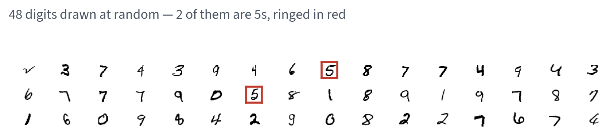
Drawn at random, and exactly 2 of the forty-eight are 5s. That ratio is the whole problem.
X_train, X_test = X[:60000], X[60000:]
y_train, y_test = y[:60000], y[60000:]
assert len(X_train) == 60000 and len(X_test) == 10000
assert X_train.shape[1] == X_test.shape[1] == 784
y_train_5 = (y_train == 5) # True for every 5, False otherwise
y_test_5 = (y_test == 5)
assert y_train_5.dtype == bool
assert y_train_5.sum() == 5421
print(f"{y_train_5.sum():,} positives out of {len(y_train_5):,}")
Two lines, and the imbalance is created. Nothing about MNIST is imbalanced; our question is.
Assert the count. If the cast to uint8 was
skipped, this assertion is what tells you — it fails at
0 == 5421 instead of silently training on nothing.
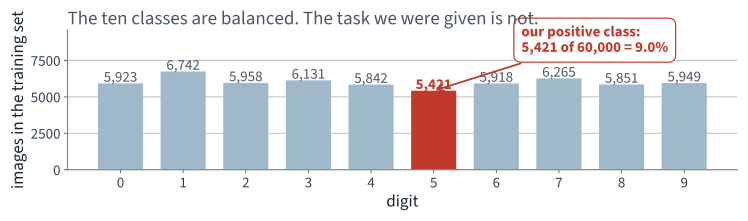
Every bar is roughly the same height. The moment we ask “is it a 5?”, one bar becomes the positive class and the other nine become the negative class.
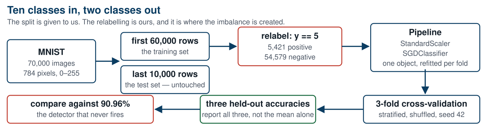
Six boxes. The red one is where the imbalance is manufactured, and the red one on the left is what every result has to be compared against.
A habit this course returns to, and we are about to apply it for the second time.
And name who chose it. If the metric arrived by default — from a library, from a habit, from an assistant — then nobody chose it.
Accuracy: the fraction of instances the classifier gets right.
The proportion of correct predictions
from sklearn.linear_model import SGDClassifier
from sklearn.pipeline import make_pipeline
from sklearn.preprocessing import StandardScaler
clf = make_pipeline(StandardScaler(),
SGDClassifier(random_state=42))
clf.fit(X_train, y_train_5)
Two components, one object. The standing constraint is satisfied by construction: when cross-validation holds out a fold, the scaler is refitted on the other folds only.
random_state=42 because SGD shuffles the
training instances. Without it, two runs of the same code give different
models — and you will spend an afternoon on the difference.
96.90%
Three-fold cross-validated accuracy, on data the model never saw during its own fitting.
Folds: 96.83%, 96.84%, 97.04%. A spread of about two tenths of a point — the three folds agree, which is more than could be said for anything in the previous application.
The cheapest possible detector. It looks at nothing and answers “not a 5” every time.
from sklearn.base import BaseEstimator
class NeverFires(BaseEstimator):
def fit(self, X, y=None):
return self
def predict(self, X):
return np.zeros(len(X), dtype=bool)
cross_val_score(NeverFires(), X_train, y_train_5, cv=cv,
scoring="accuracy") # array([0.90965, 0.90965, 0.90965])
It is right 54,579 times out of 60,000 — 90.96% accuracy, with no model, no fit and no features.
| Detector | Cross-validated accuracy |
|---|---|
| Never fires — the anchor | 90.96% |
| SGD on raw pixels | 95.03% |
| SGD in a pipeline with scaling | 96.90% |
| Perfect | 100% |
Our detector is 5.94 percentage points above doing nothing, and 3.10 points below perfect. Of the mistakes the anchor makes, we have removed 65.7%.
Both of those are the same measurement stated two ways. Say which one you mean when you report it.
The mathematics
20 minutes · examinable
Doing nothing scores 90.96%.
We score 96.90%.
What, exactly, did those 5.94 points buy?
The number is correctly cross-validated, there is no leakage in it, and the three folds agree to two tenths of a point. Everything about how it was measured is right. That is what makes the question worth twenty minutes.
Everything below is arithmetic on those four counts. There is no probability theory in this derivation and none is needed.
Two of the four counts in the numerator, all four in the denominator. Note that the two mistakes — $\mathrm{FP}$ and $\mathrm{FN}$ — enter with equal weight.
A missed 5 and a wrongly flagged 3 cost the same, as far as this formula is concerned. Nobody in the postal operator believes that.
Let $h_0(x) = 0$ for every $x$. Then $\mathrm{TP} = 0$ and $\mathrm{FP} = 0$, so every negative is a true negative:
An identity, not an estimate — no model, no data, no variance
On our task, $p = 0.09035$, so $\text{accuracy}(h_0) = 0.90965$. That is the 90.96% you measured, and you could have written it down without running anything.
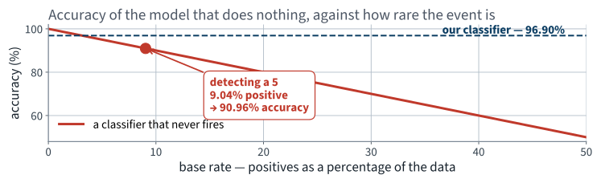
The rarer the event, the better the model that does nothing looks. At a base rate of 1%, doing nothing scores 99%.
For any target accuracy $a < 1$ you care to name, there is a detection problem rare enough that the empty model beats it.
That is this lecture’s specimen question, answered — and the shape of a Part C question on the paper.
Split the four counts by their true class. Write $\text{recall} = \mathrm{TP}/P$ and $\text{specificity} = \mathrm{TN}/N$. Then
Accuracy is a weighted average of two rates, weighted by the class sizes
This is the whole of claim 1, and claim 1 is the special case $\text{recall} = 0$, $\text{specificity} = 1$.
| Term | Value | Contribution to accuracy |
|---|---|---|
| $(1-p)\cdot\text{specificity}$ | 0.90965 × 0.98860 | 0.89928 |
| $p\cdot\text{recall}$ | 0.09035 × 0.77181 | 0.06973 |
| accuracy | — | 0.96902 |
92.8% of our headline number is the first row — being right about the digits that are not 5s.
Read that carefully. Everything the detector does about the class we were hired to find is the 0.0697 on the second row.
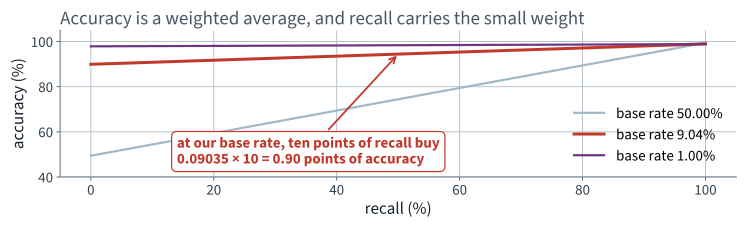
The slope of each line is the base rate. At ours, ten points of recall move accuracy by 0.90 points.
Accuracy responds to the class you care about in proportion to how little of it there is.
Every scoring classifier is really a family of classifiers, one for each threshold $t$:
Raising $t$ makes the classifier more reluctant to fire. Lowering it makes the classifier more eager. Nothing about the model changes — only where we cut.
So there is a dial. The question is what the two metrics do as we turn it.
The flagged set $\{x : s(x) \ge t\}$ shrinks as $t$ rises, and it shrinks by losing instances, never by gaining any. So for $t' \ge t$:
Both are non-increasing. Every quantity here is built from these two.
The denominator does not depend on $t$ at all: $\mathrm{TP}(t) + \mathrm{FN}(t)$ counts every positive in the data, whatever we predict about it.
So recall is $\mathrm{TP}(t)$ divided by a constant, and $\mathrm{TP}$ is non-increasing. Recall is non-increasing in $t$.
Raise the threshold, recall can only fall or stay put. There are no exceptions and no conditions.
Now both the numerator and the denominator move, and they move in the same direction. A ratio of two decreasing quantities can do anything at all.
Raise $t$ just enough to drop the lowest-scoring flagged instance. Write $T = \mathrm{TP}$, $F = \mathrm{FP}$, $n = T + F$ before the step, and let $y \in \{0,1\}$ be the true label of the instance dropped.
Cross-multiplying, the step increases precision exactly when $n(T-y) > T(n-1)$, that is when
| The instance dropped | $y$ | Effect on precision |
|---|---|---|
| a false positive | 0 | rises — always, since precision > 0 |
| a true positive | 1 | falls — unless precision was already 1 |
Recall meanwhile falls by $1/P$ in the first case and by nothing in the second. Both metrics are decided by the same single fact: what the dropped instance was.
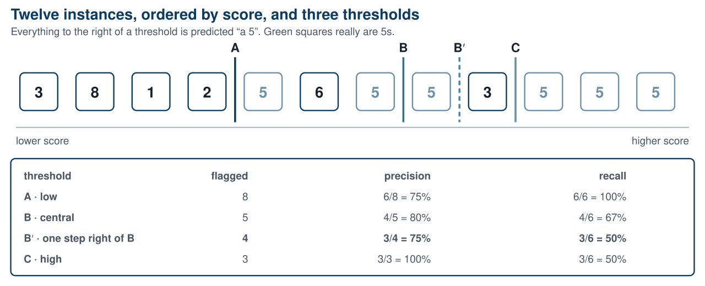
B to B′ is one step to the right, and precision falls from 4/5 to 3/4 while recall falls from 4/6 to 3/6.
And from B to C, two more steps, precision rises to 100% because the next instance dropped is a negative. Up, down, up: that is what “not monotone” means.
Sort every training instance by its out-of-fold score and walk the threshold down the list one instance at a time. That is 59,999 steps.
| As the threshold rises, one step at a time | Steps |
|---|---|
| the instance dropped is not a 5 — precision rises | 54,579 |
| the instance dropped is a 5 — precision falls | 5,417 |
| … or stays at 1, because it was already 1 | 3 |
54,579 is the number of non-5s in the training set. And 5,417 + 3 = 5,420 is the number of 5s, less the one at the very top of the ranking, which has no step above it.
Every single step is accounted for by the lemma. This is not a tendency; it is an exact classification of all 59,999 steps.
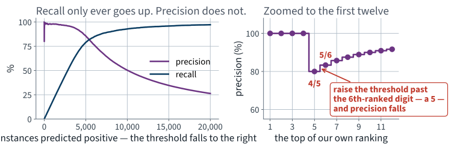
The right-hand panel is the book’s picture, on our data: the sixth-ranked digit is a 5, and dropping it takes precision from 5/6 to 4/5.
Examinable: state and prove both claims; compute the never-fires accuracy from a base rate; apply the one-step lemma to a stated ranking.
Applying it
15 minutes
| Detector | Accuracy | Recall |
|---|---|---|
| Never fires | 90.96% | 0% |
| Ours | 96.90% | 77.18% |
| Difference | 5.94 points | 77.18 points |
The identity says where those 5.94 points came from. Recall earns $p \times 77.18\%$, which is 6.97 points. Specificity fell from a perfect 100% to 98.86%, and that costs $(1-p) \times 1.14\%$, which is 1.04 points.
The arithmetic closes exactly. Now the question is whether 77.18% recall is good — and accuracy cannot answer it.
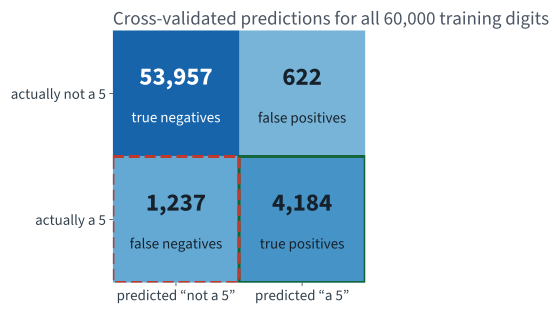
1,237 fives went past unflagged — 22.8% of every 5 in the training set.
Both mistakes are visible, separately, and they are not the same size or the same kind. Accuracy added them together and divided by 60,000.
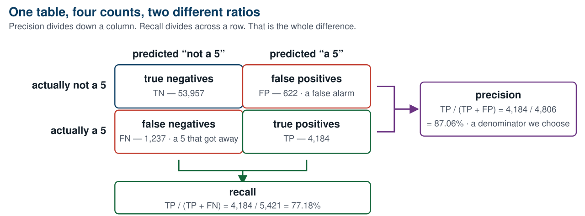
Same numerator, different denominators. Precision divides by what we chose to flag; recall divides by what was there.
| Metric | Value | Reads as |
|---|---|---|
| Precision | 87.06% | of the digits we flag, 87% really are 5s |
| Recall | 77.18% | of the 5s that exist, we find 77% |
| Accuracy | 96.90% | — |
Nearly a quarter of the 5s go past the desk.
Both of those were computable an hour ago. Nothing new was fitted; we asked the same predictions a different question.
Both are honest. Only one of them is a report the audit team can act on, and it is not the one the default metric produces.
And we chose it deliberately, on the “metric before model” slide, before we had anything to optimise. Choosing early is necessary and it is not sufficient: this was still the wrong metric, and only the class counts would have said so.
The method
40 minutes · examinable
from sklearn.metrics import precision_score, recall_score, f1_score
precision_score(y_train_5, y_pred) # 0.8706 — 4184 / (4184 + 622)
recall_score(y_train_5, y_pred) # 0.7718 — 4184 / (4184 + 1237)
f1_score(y_train_5, y_pred) # 0.8182
Recall is also called sensitivity or the true positive rate. Three names, one quantity; the third one comes back on the ROC curve in twenty minutes.
$F_1$ is the harmonic mean of precision and recall:
Ours is 81.82%, which sits below both of the numbers it combines. That is not an accident.
| Precision | Recall | Arithmetic mean | $F_1$ |
|---|---|---|---|
| 0.90 | 0.90 | 0.900 | 0.900 |
| 0.99 | 0.81 | 0.900 | 0.891 |
| 1.00 | 0.02 | 0.510 | 0.039 |
The harmonic mean is dominated by the smaller of the two. A classifier that flags three digits a year and is right every time has an arithmetic mean above one half and an $F_1$ near zero.
A filter for children’s videos
Rejecting good videos is annoying. Letting a bad one through is not. High precision, low recall — and a human reviews the rest.
A shoplifter detector for a surveillance system
A guard checking a false alarm costs a minute. A missed thief costs the stock. High recall, and accept the false alarms.
Ours is the second shape, with a hard cap: find the 5s, and do not send the desk more than it can process.
Both examples are the textbook’s. They are worth keeping because they are memorable and because they point in opposite directions.
Raising recall lowers precision, and lowering recall raises it — usually.
“Usually” is doing real work in that sentence, and the one-step lemma says exactly how much: precision rises at 54,579 of the steps and falls at 5,417 of them. The trend is reliable; the individual step is not.
y_scores = clf.decision_function([some_digit])
print(y_scores) # e.g. array([1231.4])
threshold = 0
y_scores > threshold # array([ True])
threshold = 3000
y_scores > threshold # array([False]) — the same 5, missed
Every scoring classifier computes a number and compares it to
a threshold. predict() hides the number and hard-codes the
threshold at zero.
There is no set_threshold() method, and there
should not be. You compute the scores and you compare them yourself.
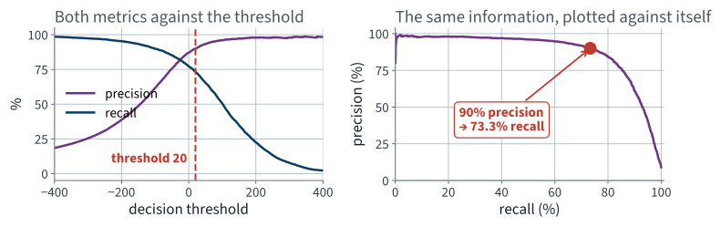
Precision starts to fall off a cliff at about 80% recall. Choose the operating point just before the cliff, not on it.
import numpy as np
flagged = recalls[:-1] * n_pos / precisions[:-1] # tp / precision = tp + fp
ok = (precisions[:-1] >= 0.90) & (flagged >= 500)
idx = int(np.argmax(ok)) # first crossing WITH support
threshold_90 = thresholds[idx] # 20.09
y_pred_90 = (y_scores >= threshold_90)
print(precision_score(y_train_5, y_pred_90)) # 0.9001
print(recall_score(y_train_5, y_pred_90)) # 0.7333
argmax on a boolean array returns the first
True. The idiom is compact and it is not obvious; read it once
and remember it.
Ninety per cent precision costs us 3.86 points of recall, from 77.18% down to 73.33%.
& (flagged >= 500) is in that lineWe have just spent twenty minutes proving this curve is not monotone. So “the first index reaching 90%” could be a single lucky step, held up by a handful of flagged digits, that the very next threshold falls back below.
Requiring support turns the crossing into a claim you can defend. And on this data it passes:
| threshold | digits flagged | |
|---|---|---|
| first crossing, unguarded | 20.09 | 4,416 |
| first crossing with support ≥ 500 | 20.09 | 4,416 |
Same point — the result, not a reason to delete the guard. You now know it rests on 4,416 digits.
And the second: aiming for very high precision is nearly free-looking and very expensive. At 99% precision our recall falls to 2.12% — a detector that finds one 5 in fifty and is almost never wrong when it does.
“99% precision” is a sentence that should always be followed by “at what recall?”
— and then by “on how many instances?” Apply the support test from the previous slide and this point fails it: 99% precision is reached on only 116 flagged digits, across a plateau 21 thresholds wide. Compare the 90% point: 4,416 digits and 4,411 thresholds.
Same sweep, different pair of axes: the true positive rate against the false positive rate.
from sklearn.metrics import roc_curve, roc_auc_score
fpr, tpr, thresholds = roc_curve(y_train_5, y_scores)
roc_auc_score(y_train_5, y_scores) # 0.9724
Note that both denominators are fixed by the data. Neither axis moves when we change the threshold’s effect on the flagged count — which is precisely why the ROC curve behaves so much better than the PR curve, and why that is a warning rather than a recommendation.
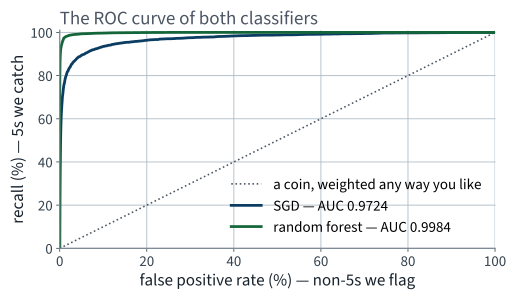
The diagonal is a coin. The area under the curve is 0.5 for the coin, 1.0 for a perfect classifier, and 0.9724 for ours.
That base-rate independence is usually sold as a virtue. On a rare-event problem it is the whole difficulty.
The reason is arithmetic. FPR divides false positives by $N$, which is huge when positives are rare, so a large number of false alarms produces a small, comfortable-looking FPR. Precision divides the same false positives by the flagged count, which is small.
Do not take that on trust. Measure it.
Take our scores unchanged, and thin the positive class to make the event rarer. The model, the ranking and the scores are identical; only the class balance moves.
| Base rate | Positives | ROC AUC | Average precision |
|---|---|---|---|
| 9.04% — as measured | 5,421 | 0.9724 | 0.8784 |
| 2.00% | 1,114 | 0.9699 | 0.7203 |
| 1.00% | 551 | 0.9709 | 0.5800 |
ROC AUC moves by 0.0015. Average precision falls by 0.298.
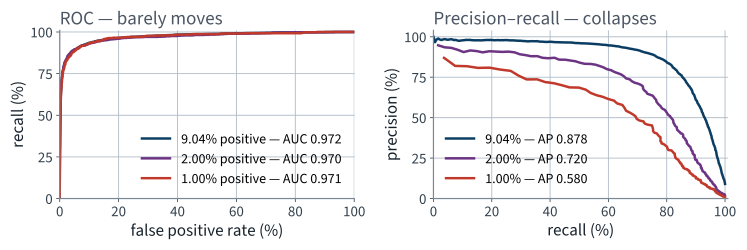
Three indistinguishable ROC curves and three obviously different PR curves, from one set of scores. The ROC curve cannot see the problem you have.
from sklearn.ensemble import RandomForestClassifier
forest = RandomForestClassifier(n_estimators=100, random_state=42)
y_proba = cross_val_predict(forest, X_train, y_train_5, cv=cv,
method="predict_proba")
y_scores_forest = y_proba[:, 1] # the positive class column
decision_function. It has
predict_proba, which returns one column per class. The second
column — the estimated probability of the positive class — plays
exactly the role of the score, and every curve above works unchanged.
| Metric | SGD | Random forest |
|---|---|---|
| Accuracy | 96.90% | 98.77% |
| Precision | 87.06% | 98.93% |
| Recall | 77.18% | 87.31% |
| $F_1$ | 81.82% | 92.76% |
| ROC AUC | 0.9724 | 0.9984 |
| Average precision | 0.8784 | 0.9883 |
| Recall available at 90% precision | 73.33% | 97.51% |
Accuracy improves by 1.87 points, which reads as polish. The last row improves by 24.18 points, and it is the row the brief is about.
Three descriptions of one comparison. Which one you report decides whether anyone approves the change.
Report the one that matches the brief, and say why you chose it. That sentence is the deliverable.
The last fifteen minutes
15 minutes
Two constraints, one dial. A threshold either satisfies both or it does not, and the honest answer may be that none does.
Choose the threshold on the cross-validated training scores. Then touch the test shift once.
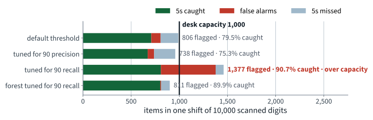
The forest, tuned for the same 90% recall, flags 811 — inside capacity, because almost none of them are false alarms.
Whichever threshold you propose, you must be able to answer all four:
We chose 0.44 because it gave 90.39% recall on the cross-validated training scores. On the test shift it gives 89.91%.
| Random forest at threshold 0.44 | Recall | Precision | Flagged |
|---|---|---|---|
| Cross-validated, on the training set | 90.39% | 98.33% | — |
| Test shift, measured once | 89.91% | 98.89% | 811 |
Half a point below target. Is that a failure, a bad fold, or noise? It is noise: the target was hit on a different sample, and a threshold chosen at exactly 90% will land either side of it about half the time.
Report it, do not tune it away. Re-tuning to make the test number reach 90% is fitting the test set, and it is the temptation Lecture 2 told you to refuse.
The counter-measure is not cleverness. It is stating the second quantity as a constraint in the same sentence as the first.
Everything above was one class against the rest. The chapter covers three more shapes, and all of them reuse the same confusion matrix.
| Shape | Output per instance | Example |
|---|---|---|
| Binary | one label from two | is it a 5? |
| Multiclass | one label from many | which digit is it? |
| Multilabel | several labels at once | is it large? is it odd? |
| Multioutput | several labels, each multiclass | the denoised image, pixel by pixel |
Another default nobody asked for. It matters: for algorithms that scale badly with training-set size, forty-five small fits beat ten large ones.
average="macro" weights every label equally,
average="weighted" weights by supportThe averaging argument is a third default that changes the number without changing the model. On imbalanced labels, macro and weighted averages can disagree substantially.
All of this is Chapter 3 and all of it is examinable. None of it changes the lesson: name the metric, and name the average.
A colleague reports 99.2% accuracy on a rare defect, correctly cross-validated. State one further quantity you would need, and why.
Also full marks: the confusion matrix, precision and recall together, or the recall alone — each of them locates the number against something. Half marks for “the test set size”: relevant, but it bounds the precision of the estimate rather than its meaning.
Three marks. Worked answer on the next slide.
| Flagged | TP | Precision | Recall |
|---|---|---|---|
| top 4 | 3 | 3/4 = 75% | 3/4 = 75% |
| top 5 | 3 | 3/5 = 60% | 3/4 = 75% |
Going from top 5 to top 4 drops the fifth-ranked instance, whose label is 0. The lemma says precision increases exactly when $y < \text{precision before}$, and $0 < 0.6$, so precision rises, from 60% to 75%. Recall is unchanged, because no positive was dropped.
The common wrong answer is “precision falls, because raising the threshold always loses information”. Both halves of that sentence are wrong, and the lemma is three lines.
Not examinable: Colab mechanics, wall-clock timings,
the internals of fetch_openml.
random_state=42 on the estimator
and on the splittershuffle=True stated explicitly, because the default is
False and two students with differently ordered frames
would otherwise get different foldsThis is graded. A result nobody else can reproduce is not a result.
Version pinning and Colab mechanics are engineering practice, outside the book and not examinable.
5 in
y_train == 5 — and re-run. The baseline moves, the
accuracy moves with it, and the pair tells you something neither does alone.
01 · What machine learning is, and how we will work
03 · Classification and its metrics
05 · Regularisation and the bias–variance trade-off
07 · Ensembles and random forests
08 · Dimensionality reduction and unsupervised learning
09 · Neural networks, from the perceptron up
14 · Detection and segmentation
18 · Attention and transformers
19 · Information retrieval: the lexical foundation
20 · Information retrieval: dense retrieval
21 · Recommender systems: from ratings to factors
22 · Recommender systems: neural, and evaluated honestly
23 · Vision transformers and multimodal retrieval
24 · Generation, retrieval-augmented systems, and where this leaves you
| Topic | Chapter |
|---|---|
| Confusion matrix, precision, recall, $F_1$ | 3 |
The precision/recall trade-off and decision_function | 3 |
| The ROC curve and ROC AUC; when to prefer PR | 3 |
| Multiclass, error analysis, multilabel, multioutput | 3 |
Random forests and predict_proba | 3, 6 |
| Average precision, and the maximum that repairs it | 12 (Lecture 14) |
Not presented — for afterwards
five, in the style of the written paper
Solutions on Lecture 4’s deck.
Solutions on Lecture 4’s deck.
The five set at the end of Lecture 2
not part of this lecture
1. The normal equation is $\hat\theta = (X^{\mathsf T}X)^{-1}X^{\mathsf T}y$. Your design matrix has a column…
$X^{\mathsf T}X$ is singular; the pseudoinverse returns the minimum-norm least-squares solution.
2. A pipeline scales the features and then fits a ridge model, and is passed whole to cross_val_score. Explain…
The scaler would be fitted on every fold’s validation rows, so each fold’s score would be optimistic.
3. You report a 95% confidence interval for the test RMSE. A colleague says the interval proves the model is…
Was the baseline scored on the same test rows?
4. k-fold cross-validation reports a mean of 0.71 with folds $[0.52, 0.79, 0.75, 0.74, 0.75]$. What do you…
One fold is an outlier; investigate it rather than reporting the mean.
5. Explain, in two sentences, why the test set may be looked at exactly once, and what you may legitimately do…
Looking at it more than once makes it a validation set. If it disappoints, you may report it — not tune against it.
Lecture 4 · Géron Ch. 4
Gradient descent, derived — batch, mini-batch and stochastic, and what
the learning rate does
Linear regression by descent rather than by the normal equation
Logistic and softmax regression, and reading a coefficient as log-odds
Run the Lecture 3 notebook first